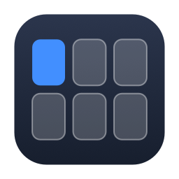
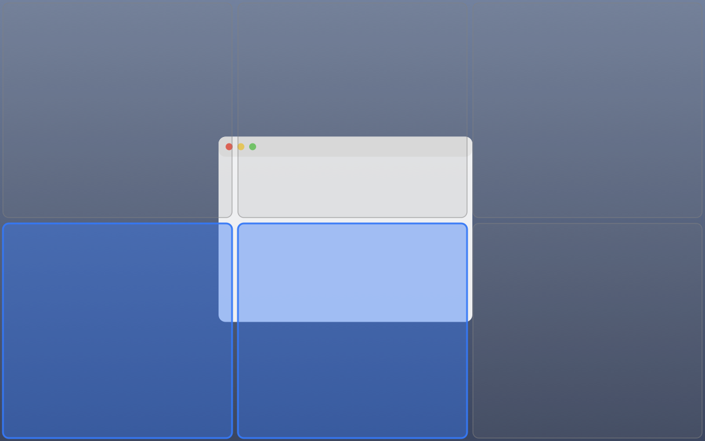
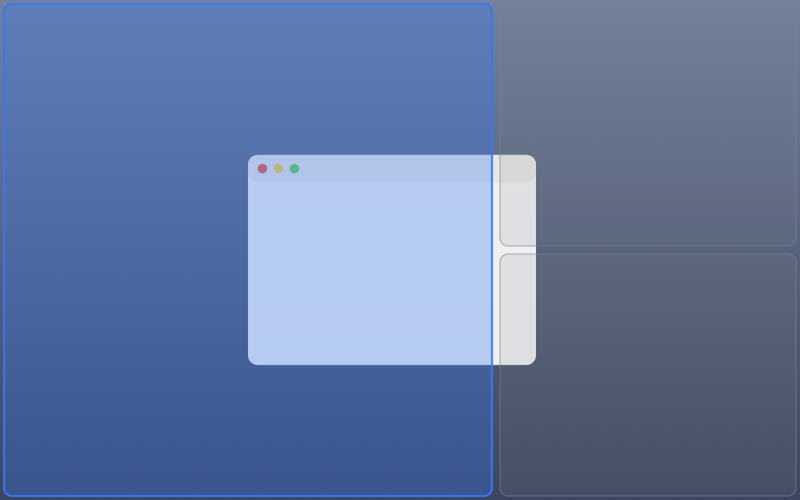
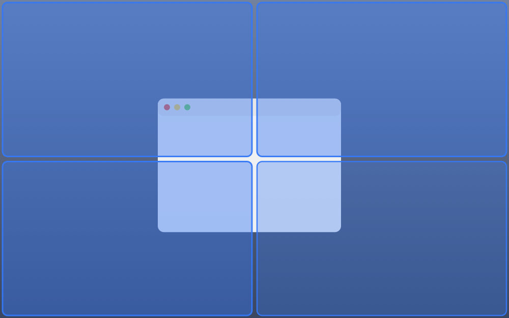
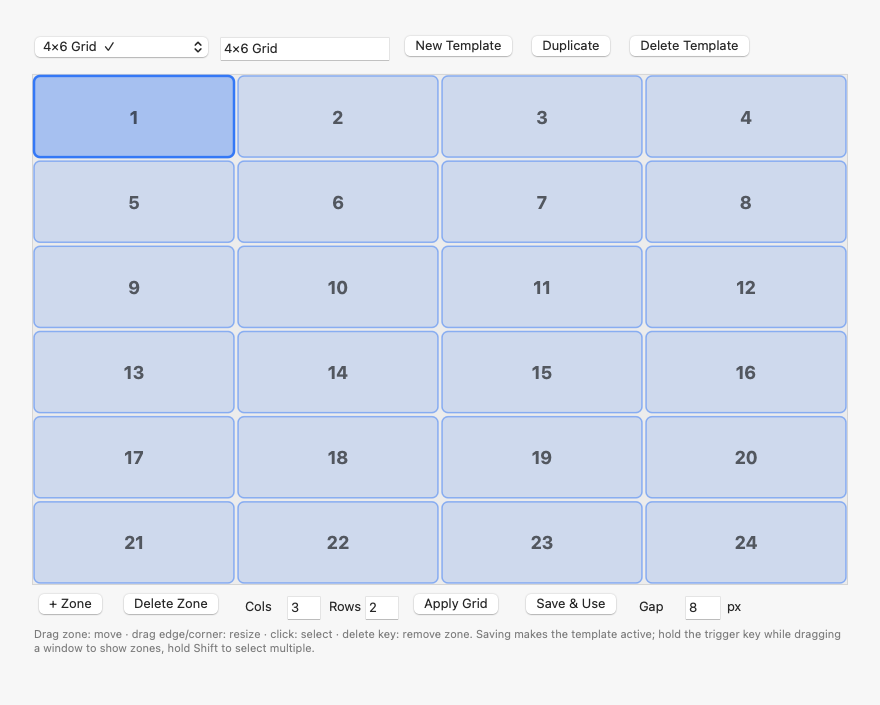
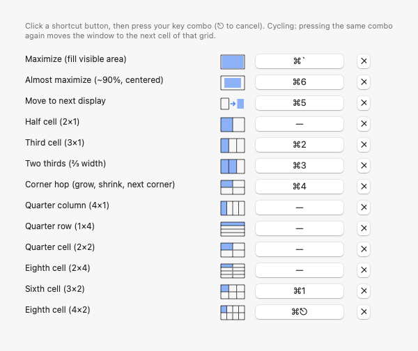
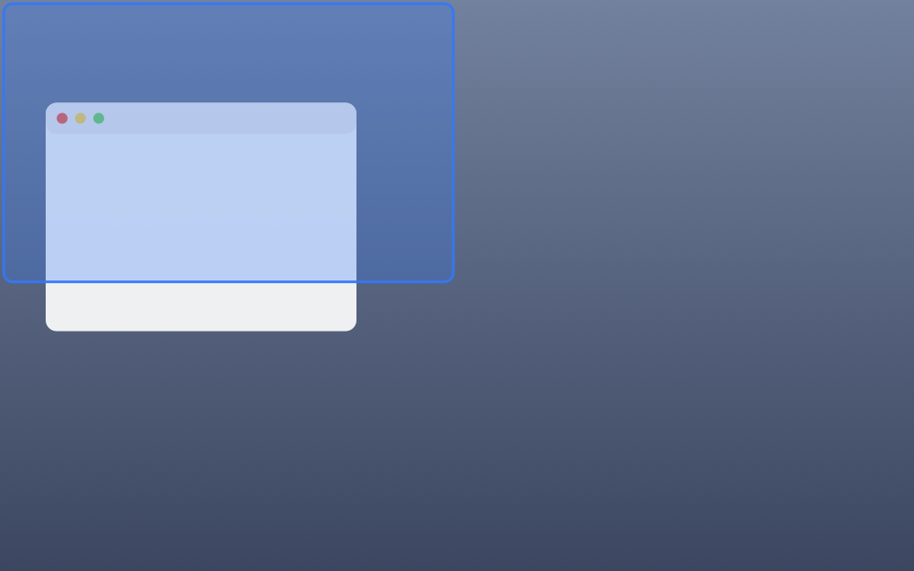

RectZones github.com/RectZones ↗FancyZones,
for your Mac.
Free.
Magnet costs money and locks you into halves. Rectangle is free but its positions are fixed. RectZones gives you the missing piece: zones you design yourself — hold ⌘ while dragging and drop the window exactly where you planned. Hold ⇧ to make one window span several zones. Open source, MIT, no account.

Every window lands exactly where you decided it should.
Drag & snap into your zones
Hold the trigger key (⌘ by default — or ⌥, ⌃, 🌐, even a custom key) while dragging. Your template appears; release over a zone and the window snaps in, with an adjustable gap around it.

Sweep to span zones
No second modifier — keep the same trigger key held and sweep across zones: the preview lights up the full area the window will cover, including cells completed by the union, before you drop. Let go of the key to cancel.

Design your own templates
Draw zones freely, or type columns × rows and hit Apply Grid. Name templates, switch with one click. Your 4×4 for the ultrawide, your Left-Wide for the laptop.

Keyboard grid cycling
Press the same shortcut again and the window hops to the next cell — 2×1 up to 4×2 grids, two-thirds, a corner-hop ladder, next display. Each row shows a mini preview of its coverage.

Edge & corner snapping
No key at all: corners give quarters, the top edge maximizes, the bottom edge gives thirds (slide along it for two-thirds), the sides give halves — with a live footprint preview.

Honest & auditable
MIT licensed, a single readable source file, zero dependencies, no updater phoning home. The only permission it needs is Accessibility — the one every window manager requires.
Where RectZones sits among Magnet, Rectangle and FancyZones
Short version: Magnet is paid with fixed layouts, Rectangle is free with fixed layouts, FancyZones is Windows-only. RectZones is the free, fully customizable one on macOS.
| RectZones | Rectangle | Magnet | FancyZones | |
|---|---|---|---|---|
| Price | Free · MIT | Free | $9.99 | Free · Windows |
| Platform | macOS | macOS | macOS | Windows only |
| Custom zone templates | ✓ visual editor + N×M | ✗ | ✗ | ✓ |
| Zones overlay while dragging | ✓ | edges only | edges only | ✓ |
| One window across many zones | ✓ hold ⇧ | ✗ | ✗ | ✓ |
| Keyboard cycling through cells | ✓ with previews | ✓ | partial | ✗ |
| Edge/corner snapping | ✓ | ✓ | ✓ | ✗ |
| Gaps between windows | ✓ 0–40 px | ✓ | ✗ | ✓ |
| AI-agent guided install | ✓ SETUP.md runbook | ✗ | ✗ | ✗ |
Tell your agent: “install this”.
🤖 The agent way
Using Claude Code or another coding agent? Give it the repo address and say
install this. The repo ships SETUP.md — a runbook the agent follows:
it builds the app, walks you through the single Accessibility permission, verifies
everything against the diagnostic log, then gives you a tour.
Prefer doing it yourself? It's four commands and one permission — see the README.
FAQ
Is there a FancyZones equivalent for macOS?
Yes — RectZones brings the PowerToys FancyZones workflow to macOS: you design zone templates, hold a trigger key while dragging a window, and drop it into a zone. Sweeping across zones with that same key held lets one window span several of them, exactly like FancyZones on Windows — no second modifier needed.
Is RectZones a free alternative to Magnet?
Yes. Magnet is a paid app with fixed halves and quarters. RectZones is free and MIT-licensed, covers the same edge and corner snapping, and adds fully custom zone layouts, multi-zone spanning and keyboard grid cycling.
How is RectZones different from Rectangle?
Rectangle is a great free tool for fixed positions via keyboard shortcuts. RectZones adds what Rectangle doesn't have: user-designed zone templates with a visual editor, a drag overlay that shows all zones at once, a single-key sweep that combines zones into one area, and per-shortcut grid cycling. RectZones was built from scratch, inspired by Rectangle (MIT).
What permissions does RectZones need?
Only macOS Accessibility permission, which every window manager needs to move windows. RectZones has no network access, no analytics, no account — it is a single Objective-C file you can read in one sitting.
Can an AI agent install RectZones for me?
Yes. Point your coding agent (Claude Code or similar) at the GitHub repository and say "install this". The repo ships SETUP.md, a step-by-step runbook the agent follows: it builds the app, walks you through the permission, verifies everything against the diagnostic log and gives you a tour.
Does RectZones support multiple monitors?
Yes — zones are defined as proportions of each screen, templates apply per display, and there is a dedicated shortcut to send a window to the next display while keeping its relative position.